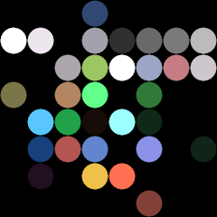
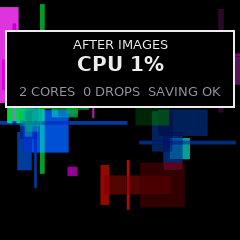
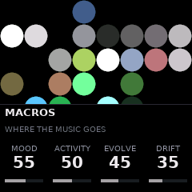
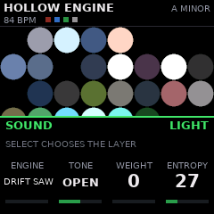
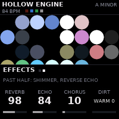
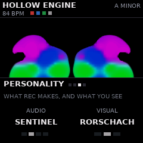
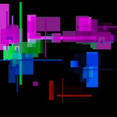

User guide
After Images turns the M-VAVE FM-1 into a generative ambient composer. You don't program it note by note: you press REC and it writes a piece, then you steer it. This guide starts with a quick reference and the first five minutes, then works out to the details.
1Quick reference
| Control | What it does |
|---|---|
| K1 to K4 at home | the four layers' levels |
| HOME held + K1 to K4 | MOOD, ACTIVITY, EVOLVE, DRIFT |
| HOME tapped at home | the FM-1's health: CPU, drops, saving |
| HOME elsewhere | back home |
| REC | a new piece, following on from the last |
| REC held | a new piece in the same key and scale |
| SEL held + REC | the chosen layer dealt afresh |
| OCT- / OCT+ | the keys' octave down or up; on a GLO page, back and forward through the pieces REC replaced |
| SAVE | keep the piece |
| ALGORITHM knob | step through saved pieces |
| PLAY | stop (it fades out) and start |
| SEL, or SELECT knob | choose the layer |
| PRESET knob | the chosen layer's engine |
| EDIT | SOUND |
| SEQ | SEQUENCE |
| ENV, ENV again | MIX, VOICE |
| FX, FX again | SENDS, EFFECTS |
| LFO, LFO again | MOTION, WARBLE |
| GLO, twice, three, four times | MACROS, SCALE, PERSONALITY, SCREEN |
| ARP, twice, three, four times | MIDI, CHANNELS, USB AUDIO, BLUETOOTH |
| white keys | the scale's notes |
| black keys | the scale's chords |
2Installing
You need a computer with Chrome or Edge and a USB cable for the FM-1.
- Open the installer and plug in the FM-1.
- Follow the page. It takes about a minute, and the FM-1 restarts into After Images.
After Images is unofficial and not affiliated with M-VAVE: you install it at your own risk. The same installer can put M-VAVE's own firmware back at any time, and you can go back to any earlier version of After Images from the releases. Want to hear it first? Play it in your browser.
3The first five minutes
- Listen. It starts playing straight away.
- Turn K1 to K4 to set the four layers' levels: GROUND, BODY, LIGHT and DUST. The levels show while you turn.
- Press REC for a new piece. Each one has its own key, tempo, sounds, sequencers, effects, colours and name, and it follows on from the last one round the circle of fifths.
- Hold REC (about a second) for a new piece in the same key and scale.
- Hold HOME and turn K1 to K4 to steer the piece: MOOD, ACTIVITY, EVOLVE and DRIFT.
- Liked an earlier piece? Press GLO, then OCT- to step back through the pieces REC replaced, OCT+ forward again.
- Press SAVE to keep a piece. Turn the ALGORITHM knob to step through the ones you've saved.
- Stop with PLAY before you switch off, and wait a few seconds. It keeps the piece and your settings by itself.
When you switch on, the sound fades in after about a second, once the FM-1 has read its volume knob, so it never blasts out with the knob turned down.

4The screen
At home the screen shows the music as a visual (MATRIX, RORSCHACH or MOSH: see 13). On the other pages, the top shows the piece's name, its tempo, its key and scale, and four small squares for the layers, lit as they play. The bottom shows the page's four knobs: K1 to K4, left to right.
When you turn a knob at home, or change something with a button, a panel shows what changed and fades away.
Tap HOME at home for how the FM-1 is doing: how busy its processor is, how many times the audio has dropped out since you switched on, and whether saving works.

5The four layers
Every piece has four layers, each in its own part of the sound and its own colour:
| Layer | Colour | Its job |
|---|---|---|
| GROUND | red | the bass, and the loudest |
| BODY | blue | the chords and pads |
| LIGHT | green | the melody |
| DUST | white | the air: sparkle, texture, quiet details |
Each layer has its own sound and its own sequencer, and they listen to each other: one layer's notes can nudge another layer's sequencer (LINK, in MOTION).
Choosing a layer. Tap SEL or turn the SELECT knob. The chosen layer is the one the SOUND, SEQUENCE, MIX, VOICE and SENDS pages change, and the one the keys play. Hold SEL and press REC to deal the chosen layer afresh: a new sound and sequencer, with the rest of the piece left alone.
6Steering a piece: the macros
Hold HOME and turn the knobs, or press GLO for the same four as a page of their own:
- K1, MOOD. Darker to the left, brighter to the right, with 12 o'clock as REC dealt it. Darker brings in more sub bass and plainer chords (triads). Brighter opens the upper layers and thins their low end, colours the chords (sevenths, then ninths), and leaves GROUND, a little louder, carrying the bass. MOOD shapes the notes too: to the left they're longer, with softer starts and longer tails, smooth and blurred; to the right shorter, with sharper starts and quicker tails, staccato and crisp. At 12 o'clock they're as the piece has them. GROUND keeps its length when bright, so the bass stays full. (It shapes the piece's notes, not the ones you play on the keys.)
- K2, ACTIVITY. How busy it is: from a few notes to many.
- K3, EVOLVE. How much the form changes: whole sections with layers dropping out and coming back, and new chords. At 0 it stays put.
- K4, DRIFT. The ambient mixer. Turned up, the layers fade in and out, wander round the stereo field, and slowly morph their sounds and effects, so the piece never settles. At 0 everything stays as you set it.

7Shaping a layer
These pages change the chosen layer (see 5). Press a page's button to open it; press it again for its next page. The dots beside the page's name show how many pages that button has, and which one you're on.

EDIT: SOUND
- ENGINE picks its sound (see 8). The PRESET knob does the same from any page.
- TONE works like a DJ's filter: 12 o'clock is open, left sweeps a low-pass down, right sweeps a high-pass up.
- WEIGHT goes from soft to heavy.
- ENTROPY adds strangeness in each engine's own way: saws drift apart, bells go inharmonic, the organ's rotor speeds up. Past halfway a little chaos (feedback and slackness) joins in, but the engine stays itself all the way up.
The knobs reach notes that are already sounding, so a long note changes as you turn.
SEQ: SEQUENCE
- TYPE picks the sequencer (see 9).
- DENSITY sets how many notes it plays.
- RATE sets how fast it runs against the tempo, from 1/4 to 3 times.
- MUTATE sets how much it changes as it goes.
ENV: MIX
- LEVEL sets the layer's volume, the same as K1 to K4 at home.
- ATTACK and RELEASE set how each note fades in and out. Even at zero, every note eases in over 2 ms and rings out for a moment, so nothing clicks or gets clipped off.
- OCTAVE moves the layer down or up by up to two octaves.
ENV again: VOICE
- F.GLIDE makes the filter glide after each new note (the pitch never slides).
- LEGATO makes overlapping notes run into each other instead of starting again.
- SWEEP opens a filter over each note.
- RESO sets the filter's resonance.
8The sounds
Thirty engines. REC picks ones that suit each layer and the personality, but any layer can play any of them.
| Engine | What it is |
|---|---|
| BLEEP | a pulse wave, its width moving |
| BOWED | a bowed string's tone, its vibrato coming late; ENTROPY presses the bow harder |
| BOWL | a singing bowl, rubbed or struck, its overtones beating |
| BRASS | soft synth brass, the filter swelling open then settling |
| BREATH | noise through a tuned resonance: wind and breath |
| CHOIR | three voices singing from "ooh" to "aah" |
| CZ | 80s phase distortion, sine to saw to resonant sweeps |
| DRIFT SAW | two detuned saws, low-passed: the classic pad |
| DX | four-operator FM with a spectrum that moves over each note |
| E.PIANO | an 80s FM electric piano: struck, its tine ringing, harder notes barking, a gentle stereo tremolo |
| FM | two-operator FM with feedback |
| FOLD | a sine folded back on itself |
| GLASS | a struck glass: partials off the harmonics, the upper ones fading first |
| JUNO | an 80s polysynth pad: two pulses swaying in width, a sub, made for chorus |
| LADDER | a warm bass through a resonant 24 dB filter that opens a little on each note |
| MALLET | a marimba, vibes or kalimba |
| ORGAN | drawbars with a rotating speaker's swirl |
| REESE | the jungle bass: two saws beating slowly, a deep low-pass, a sub underneath, long and legato |
| RUMBLE | pitched wind: dark noise through two tuned resonances, gusting |
| SHAPES | unusual waves that DRIFT moves through |
| SINE | pure and clean; WEIGHT warms it |
| SQUARE | hollow, its width always swaying a little; ENTROPY sweeps it to a thin pulse |
| STRING | a plucked string; ENTROPY loosens it |
| STRINGS | an 80s string machine: soft, dark, wandering |
| SUB | a sine with its octave, driven: deep bass |
| SYNC | a hard-synced saw, sweeping down over each note |
| TRIANGLE | soft and hollow, its odd harmonics through; WEIGHT folds it |
| VHS SYNTH | a saw and square drifting apart through a slow, dark filter, like an old synth on a worn tape |
| VOICE | a pulse through vowel formants |
| WAVES | a wavetable scanned from dark to bright as each note plays |
The bass stays in the middle: GROUND's notes sit near the centre, DRIFT never walks it far, and below about 120 Hz the whole mix is mono, so the low end is solid on any system.
9The sequencers
None of them roll dice. Each is a small system with rules, so its patterns have a shape you can hear.
| Sequencer | How it makes notes |
|---|---|
| EUCLID | hits spread evenly round a ring, a melody of another length over them |
| TURING | a looping pattern that sometimes flips a step |
| MARKOV | each note chosen from the last by learned chances |
| LORENZ | a note at each loop of the Lorenz attractor: never quite repeating |
| BOUNCE | bouncing balls, faster and softer as they settle |
| ORBITS | planets with their own years: a note as each comes round |
| LIFE | a row of cells growing by a rule; the live ones play |
| CHIMES | wind chimes knocked together by gusts |
| PHASE | one phrase played twice at slightly different speeds, drifting apart (Steve Reich) |
| DRUNK | a walk: each note a small step from the last |
| MELODY | a long, looping early-90s Warp melody that slowly changes |
10Effects
Four shared effects. Each layer sends its own amount to each one, so GROUND can stay dry while LIGHT swims in echo.
- FX opens SENDS: how much of the chosen layer goes to each effect.
- FX again opens EFFECTS: the effects themselves, for the whole piece.

- REVERB. Up to 12 o'clock, a room from small to vast. Past it, a shimmer comes in an octave up, and by full an octave down as well.
- ECHO. Up to 12 o'clock, a tape echo locked to the tempo. Past it, the echo turns into a reversed, smeared wash.
- CHORUS. Up to 12 o'clock, a chorus from gentle to lush. Past it (shown as ENS), a slower, deeper, wider ensemble like an old string machine's.
- DIRT. Tape pushed hard, from warm saturation to fuzz to breakup with hiss and dropouts.
A layer's send always does something, even with the shared amount at 0. Shared CHORUS and DIRT also reach every layer a little, even with its send at 0.
Each REC also features one effect: shimmer, reverse echo, chorus, ensemble, tape saturation, tape fuzz, wide space or HAZE, never the same twice in a row. The panel after REC names it.
11Motion and warble
LFO: MOTION
- LINK sets how much the layers answer each other.
- WARP adds swing, with phrases speeding up and slowing down.
- FLOW adds slow random movement to the filters.
- CHAOS adds ratchets and skipped steps.
LFO again: WARBLE. This puts worn tape inside the synth:
- WARBLE makes the pitch wander slowly.
- FLUTTER adds a faster wobble.
- DETUNE puts everything a touch flat.
- WEAR makes the whole mix sound like an old tape: duller and narrower, its top end drifting.
12Key, scale and tempo
GLO again: SCALE
- KEY sets the root note.
- SCALE picks from 20 scales, from major and minor through the modes to pentatonics, Hirajoshi and whole tone.
- CHORDS sets the chord colour: triads, sevenths, ninths, suspended, spread or fifths.
- TEMPO sets the speed, from 40 to 180 BPM.
Every note stays in the scale, whatever you change.
When it follows a MIDI clock (see 16), TEMPO shows the clock's tempo, marked IN.
13Personality and the visuals
GLO three times: PERSONALITY. KNOB 1, AUDIO, chooses what kind of piece REC makes. KNOB 3, VISUAL, chooses what the screen shows.

The four personalities each favour their own sounds, sequencers, tempos, scales, effects and macro ranges:
- ANALYST. The original After Images: anything from drones to melodies, 65 to 110 BPM.
- SENTINEL. Dark, sparse drones at 45 to 75 BPM in dark scales (Phrygian, minor, Hungarian, Hirajoshi): ORGAN, STRINGS, REESE and FOLD, few notes, MOOD low. Each REC is one of three kinds: a drone in the tape fuzz, a worn and wandering VHS one, or a clean, dark and wide one.
- DIPLOMAT. Distant and ethereal. Slow pads (STRINGS, CHOIR, WAVES, SINE) at 45 to 65 BPM, long swells, deep in the shimmer reverb and the echo, the bass soft.
- EXPLORER. Analogue, melodic and moving, the synthwave side. Turing machine arpeggios and a bass line with a melody of its own, on DRIFT SAW, SQUARE and VHS SYNTH at 80 to 110 BPM, smooth and deep in chorus, a little wobbly.
The personality takes effect at your next REC. The first REC after you choose SENTINEL, DIPLOMAT or EXPLORER also sets the HOME macros within that personality's ranges, since part of its character lives there. After that the macros are yours: RECs keep them as you leave them, as ANALYST always does.
GLO a fourth time: SCREEN sets up the visual. Each REC deals a new colour palette, and the four layers always keep four clearly different colours.
- MATRIX. A pegboard of light. Each note lights a peg by its pitch and its place in the stereo field. Mixed colours breed between lit pegs and the old ones fade. SCREEN: COUNT, SIZE, BREED, FADE.
- RORSCHACH. A folded inkblot. Each layer's ink swells with the beat as it plays, the colours bleed together, and black voids carve through. SCREEN: SIZE, GAPS, MIX, FADE.
- MOSH. Blocks and lines that pile up, mix and stretch where the music sits in the stereo field. On the PERSONALITY page, SHAPES (KNOB 4) picks BLOCKS (squares, rectangles and lines) or LINES (mostly lines). SCREEN: SIZE (the zoom), BREED, MOULD, FADE.
When you stop, the visual fades to black. While stopped, the keys (and MIDI in) still draw on it, so you can watch your sounds as you audition them. It fades again a few seconds after you stop playing.

14Playing the keys
The keys play the chosen layer's sound, always in the scale, so there are no wrong notes.
- The white keys play the scale's notes.
- The black keys play its chords: I to VII, then I to IV an octave up.
- OCT- and OCT+ move the keys down or up an octave at a time (three each way). The button stays lit while you're shifted. On a GLO page they step through earlier pieces instead.
Your notes ride along with the piece, through its effects, and play at the same level whether the piece is playing or stopped, so you can audition sounds with PLAY off and they won't jump out when it starts.
How hard you play. The keys sense your touch. Played with fingertips, the FM-1's keys only read a narrow range (about 85 to 127 out of 127, a whole finger laid on slowly reaching down to about 60), so After Images stretches that range: a light tap plays softly, a firm one loud. A chord on a black key is as loud as a single note.
- KEY VEL (ARP twice, KNOB 4) sets how much your touch counts, from FULL (every difference heard) to FIXED (every note the same). See 16.
- To see your touch, open that page and play: for a few seconds it shows TOUCHED (what the key read) and PLAYED (the velocity the note got).
15Saving your pieces
- SAVE keeps the piece playing, in up to 16 places. Turn ALGORITHM to step through them.
- Saving over a piece. If the piece came from ALGORITHM, SAVE updates it in place. If it came from REC, SAVE adds a new one.
- The SAVE light stays lit while the piece has changes you haven't saved.
- Saving by itself. A few seconds after you stop with PLAY, it keeps the piece and all your settings. It never does this while the music plays, because writing to memory stops the audio for a moment. Nor while you're auditioning: it waits until you haven't played the keys (or MIDI in) for 8 seconds and the sound has died away. So stop, and give it a few seconds, before switching off. It never changes your SAVE slots.
- SAVE while playing also works: you'll hear a soft dip while it writes.
16MIDI, sync and recording
ARP: MIDI
- CLOCK sets where the tempo comes from: INT (its own), IN (following another device's clock), OUT (leading: sending its clock, start and stop) or THRU (following, as IN, and passing the clock, start and stop on to USB and Bluetooth, never back where they came from). THRU links a chain: a drum machine into the TRS jack, After Images following it, and Expectation Reality following both over Bluetooth.
- NOTES OUT sends every layer's notes, each on its own channel, and the notes you play, so you can double the piece on other synths. It doesn't affect the clock.
- NOTES IN decides what incoming notes play: - LAYERS: notes on a layer's channel play that layer; others play the chosen layer. - CHOSEN: every note plays the chosen layer. - OFF: incoming notes are ignored.
- CC IN lets other gear move the knobs. CC 20 to 23 move the macros (MOOD, ACTIVITY, EVOLVE, DRIFT), 24 to 27 the effects (REVERB, ECHO, CHORUS, DIRT), and 28 to 31 MOTION (LINK, WARP, FLOW, CHAOS).
ARP again: CHANNELS (the same channels in and out)
- LAYERS sets the four layers' channels: 1–4 by default, or any four in a row.
- KEYS sets the channel the notes you play go out on (5).
- PLAY CH sets which incoming channel plays the chosen layer. ANY means every channel that isn't a layer's.
- KEY VEL sets how much your touch counts on the FM-1's own keys (not incoming MIDI). At FULL (the default) they play as hard as you play them. Turning it up draws soft and hard notes together, towards one firm velocity, until at FIXED every note plays the same. For a few seconds after you play a key, the line under CHANNELS shows TOUCHED (what the key read) and PLAYED (the velocity the note got, after KEY VEL), both out of 127. The notes you play go out over MIDI at the PLAYED velocity.
Incoming notes are put into the scale. MIDI comes in over USB, Bluetooth (when it's on) or the FM-1's TRS jack, and goes out over USB and Bluetooth.
Syncing to an Ableton Move. Connect Move's USB-A port to the FM-1. On Move, set MIDI Sync to Out. On the FM-1, set CLOCK (ARP) to IN. Press play on Move: the FM-1 starts with it, follows its tempo (the screen shows, say, 116 BPM IN), and locks to its beats and bars. It stays locked through a new piece and a change of tempo.
ARP a third time: USB AUDIO. Plugged into a computer, the FM-1 shows up as a stereo audio input, so you can record it straight into your DAW.
- OUTPUT sets what you hear and record. MIX is everything. CLEAN is the mix without effects: none of the FX page's four (reverb, echo, chorus, DIRT), nor the mix's balance or WEAR, so you can add your own when you mix. CLEAN changes the speaker and headphones too, because the computer records what the FM-1 plays.
- CONTROL sets what decides the computer's level. MASTER follows the FM-1's volume knob, so turning it down turns the recording down too. FIXED ignores the volume knob and sends the level on GAIN (KNOB 4, shown only with FIXED): 0 to 100, starting at 80. 100 is full scale, where the peaks touch the top; 80 (about 4 dB down) leaves headroom for your DAW or AUM. With FIXED, GAIN turns the speaker and headphones down by the same amount, under the volume knob.
ARP a fourth time: BLUETOOTH. Bluetooth MIDI, wireless: to an iPad, a phone or a computer, or straight to another FM-1 (Expectation Reality, say), no cable and no hub.
- BT MIDI chooses what it does, and stays as you leave it from one start to the next: - OFF (the default): the radio is quiet. - FIND ME: it waits for something to connect to it, an iPad, a Mac or another FM-1 set to HOST. The line under the page shows its name, FM-1 and four characters (each FM-1 its own), and WAITING or CONNECTED. That name is what the other end lists. - HOST: it connects to a Bluetooth MIDI device itself, such as another FM-1 set to FIND ME. While this page is up it looks for devices nearby (the line says LOOKING FOR MIDI DEVICES, then CONNECTED and the name).
- DEVICE (HOST): turn to choose one of the devices found. Another FM-1 shows as FM-1 and four characters, the name on its own BLUETOOTH page.
- CONNECT (HOST): turn right to connect to it (WAIT, then ON), left to let it go.
- Turning Bluetooth on from OFF pauses the sound for about a second while the radio starts.
- Connected either way, it works like USB: clock, start and stop and NOTES OUT go to it, and its clock and notes come in, as the MIDI page sets. A clock followed over Bluetooth is timed by when it was sent, so the tempo doesn't wobble with Bluetooth's uneven delivery.
- Bluetooth holds one connection at a time: as HOST to a device, or in FIND ME from an iPad, a Mac or an FM-1.
- From an iPad in AUM: Settings, Bluetooth MIDI Devices, then this FM-1's name. On a Mac: Audio MIDI Setup, the MIDI Studio window, the Bluetooth button. No pairing is needed.
- Two FM-1s: one on FIND ME, the other on HOST, choose it under DEVICE and turn CONNECT right. For After Images to lead, set its CLOCK to OUT and the other's to follow.
- Measured on the FM-1, Bluetooth adds no load you can see on HOME.
17Ideas to try
- A long drone for sleep or study. Turn ACTIVITY down, MOOD a little left and DRIFT up. Set REVERB past 12 o'clock for shimmer, then leave it.
- VHS haze. Press REC until the panel says HAZE, or set it up yourself: WARBLE up, DETUNE about halfway, WEAR around 50, CHORUS past 12 o'clock, and VHS SYNTH on BODY.
- Jungle bass under ambient pads. Put GROUND on REESE and turn LEGATO on (REC does both when it deals a REESE). Bring BODY's ECHO past 12 o'clock for the reverse wash.
- A slowly evolving set. Turn EVOLVE and DRIFT up, then hold REC every few minutes: each piece stays in key with the last, so a set flows on.
- Play over it. Choose LIGHT with SEL, pick MALLET or BOWL, and play the black keys for chords that always fit.
- With a drum machine. Sync to its clock (see 16). Turn WARP down so the sequencers stay on the grid, and CHAOS up a little for ratchets.
18When something's not right
- No sound. Check the layer levels at home (K1 to K4) and the FM-1's volume, and that it's playing: the PLAY light is green.
- The keys are too loud, too quiet, or don't follow your touch. Turn KEY VEL (ARP twice, KNOB 4) towards FIXED for an even level. To check what the keys read, play a few notes on that page and watch TOUCHED and PLAYED.
- Clipping in your DAW or AUM. On USB AUDIO (ARP three times), set CONTROL to FIXED and turn GAIN down from 80.
- Crackles or pops. Tap HOME and look at DROPS. If it rises when you hear them, the FM-1 is running out of time: try fewer busy layers or less ACTIVITY. It also sheds notes by itself under heavy load.
- Crackles when another device sends it MIDI. Check for a MIDI loop: with NOTES OUT on, if the other end (AUM, a DAW) sends the FM-1's own notes back to it, every note plays twice. Remove that route, or turn NOTES OUT off.
- A setting seems to do nothing. Many settings act on the chosen layer: check which layer SEL has chosen (the page shows it in the layer's colour).
- It didn't remember my changes. It saves a few seconds after you stop with PLAY. Switching off while it plays loses what changed since the last save.
- Not following the clock. Check CLOCK (ARP) is set to IN, and that the other device sends clock as well as start and stop. The tempo shows "IN" while it follows.
- Going back. The installer can put M-VAVE's firmware back, or any earlier After Images from the releases.
- Found a bug or have an idea? Open an issue.
19Making music with it
The music you make with After Images is yours: release it, sell it, use it however you like. If you do release something made with it, a credit ("made with After Images") is appreciated, though never required.
To support After Images, have a listen to my label, Burnt Ends Records on Bandcamp.